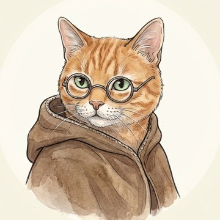
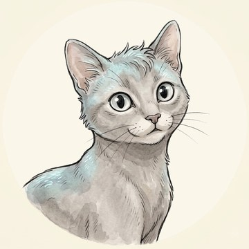
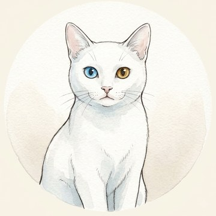
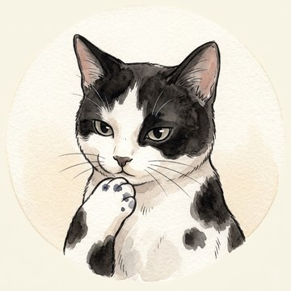

The World
세계관
Aethel Cataria — a dark, cozy fantasy
삼백 년 동안 한 고양이 약초사가 돌봐 온 마법 정원, '고양이 약초사의 비밀 정원'으로 여러분을 초대합니다. 이곳 정원의 시간은 시계가 아닌, 밤하늘에 떠오르는 달의 흐름을 따라 흘러갑니다.
01

바바 — Baba
안경을 쓴 진저색 고양이 약초사. 낡은 망토에 작은 약병 가방을 두르고, 매일 아침 정원의 이슬을 확인하는 것으로 하루를 시작합니다.
삼백 년 동안 이 정원을 지켜 왔지만, 오래전 서쪽 숲에 두고 온 일에 대해서는 좀처럼 말하지 않습니다. 그 사연을 다 아는 것은 바바 자신뿐입니다. 오래 산 존재만이 가질 수 있는 씁쓸한 위트로, 묻는 이에게 언제나 절반의 진실만을 들려줍니다.
A ginger tabby herbalist who has kept this garden for three hundred years — and only she knows what she left behind in the western woods.
02
정원 — The Garden
연못과 오두막, 사계절 내내 색을 바꾸는 화단이 있는 작은 세계. 낮과 밤, 보름달과 그믐달에 따라 정원의 표정도 함께 달라집니다.
어떤 꽃은 보름달이 뜨는 밤에만 조용히 만개하고, 어떤 잎은 달이 삭으로 기울 때 가장 진한 향을 품어냅니다. 특별한 지식이 없어도 괜찮습니다 — 오늘 밤 하늘의 달이 어떤 모양인지, 그것만으로도 충분히 정원과 마주할 수 있습니다.
03
제자들 — The Apprentices
바바 곁에서 약초 일을 배우는 세 제자. 저마다 다른 방식으로 정원을 익혀 가며, 바바의 하루하루 곁에 늘 함께합니다.

루나 — Luna
감으로 먼저 아는,
몸이 앞서는 제자

아쿠아 — Aqua
지켜보고 스스로 고쳐 나가는,
수문을 지키는 제자

잉크 — Ink
스승의 일지를 베껴 쓰며
자기 글을 찾아가는 제자